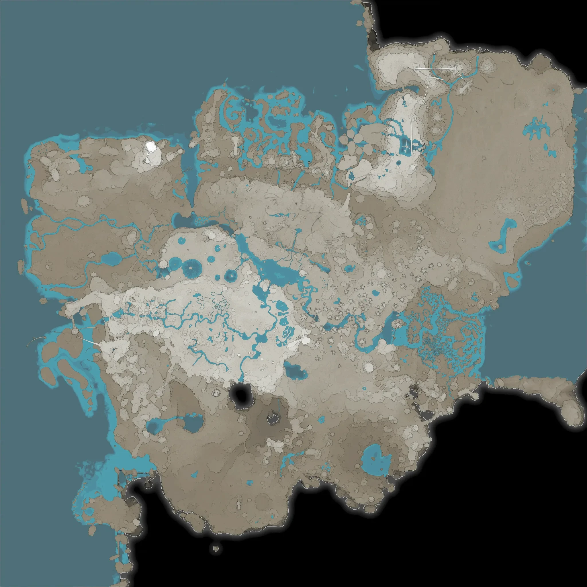

SF
+
리리 생산 설계실
2026.3.489 · OFFLINE
SF+ 에셋 기반 부분 계산 지원
SF+와 의존 모드의 재료·산출·시간·기계가 확인된 레시피를 계산합니다. 런타임 삭제·해금 조건과 일부 기본값은 미확정입니다. 누락 제작 경로는 외부 공급으로 표시합니다.
추출 보고서 ↗
01 생산 플래너
02 월드맵
03 노드 그래프
생산 흐름
레시피를 선택하면 즉시 재계산
원자재 · 외부 공급 /분
부산물 /분
월드맵
전체 보기
☰ 필터
+
−
전체 보기

노드를 클릭하면 자원·순도·게임 좌표를 표시합니다.
공장 마커
이름
메모
취소
저장